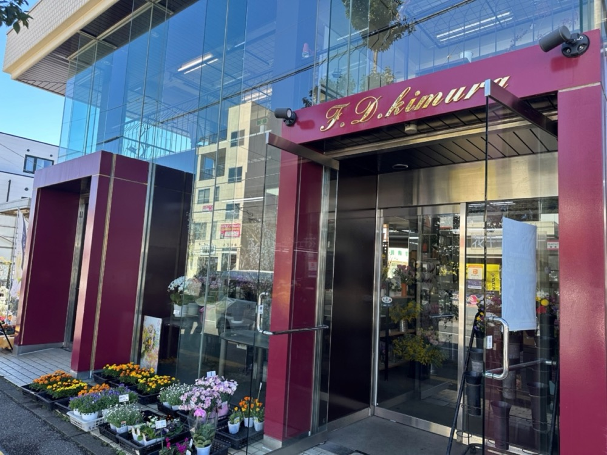
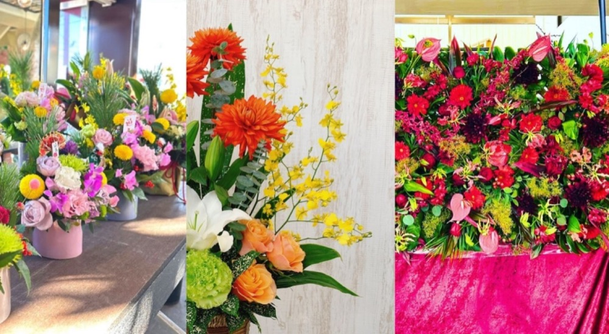
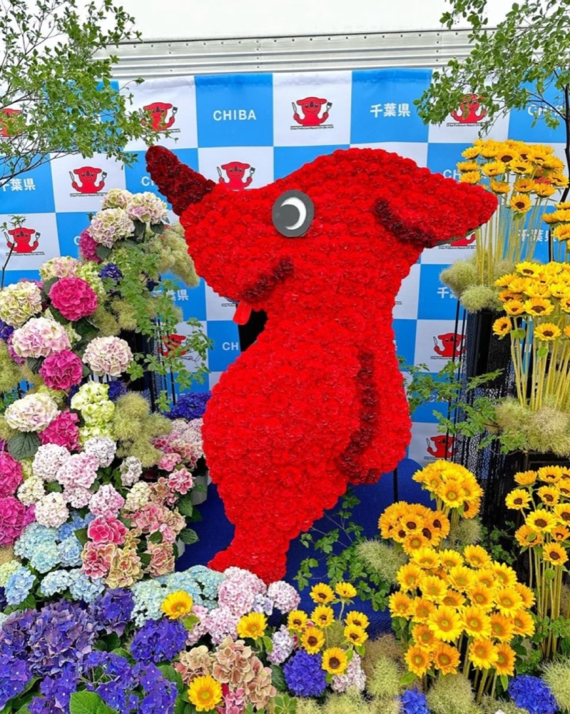

千葉を代表する実力派フラワーショップ
木村 政照
株式会社エフディーきむら 代表取締役
2002年、株式会社エフディーきむらに入社。数年の下積み・先代社長や先輩方から指導・教育を受け、2006年10月同社取締役に就任。花き業界の花に対する専門知識(花の生産者別の産地の特性や品質の目利き等)を学び、仕入れから業務全般のマニュアル化を進め社内の基盤を構築。2018年、代表取締役に就任。2019年、事業の一環としてフラワーデザインスクール花Laboを開講。2022年、葬儀会社 花葬～はなそう～を設立。
企業サイトを見るTRACK 01
千葉を代表する実力派フラワーショップ

株式会社エフディーきむらは、我孫子市と柏市に合計3店舗のフラワーショップを展開している。
花キューピット主催「ジャパンカップ」南関東代表選手権で12回の優秀賞受賞、2度の花キューピット会長賞受賞など、数々の受賞歴を持つ同社は、花のデザイン技術力が卓越している企業として業界でも一目置かれている存在だ。
現在も現場に立ち、お客様へ一級品のデザインを提供している木村代表に、これまでの歩みと今後の展開について詳しく話を聞いてみた。
TRACK 02
比類なき2代目の躍進

1968年に創業者である木村代表の父が創業したエフディーきむら。FDとは「フラワーデパート」の頭文字からとっており、我孫子市に本店を構えている。2002年に入社した木村代表は一人前になるべく父や先輩方から3年みっちりと指導を受け、2005年に取締役に就任。その後も産地の特性や品質の目利きといった花き業界の専門知識をひたむきに学んだ。
その後2018年に代表取締役に就任。社内のシステム基盤の構築からはじまり、2019年には事業の一つとしてフラワーデザインスクール「花Labo」の開講、2022年には新規会社として葬儀会社「花葬」を設立するなど、とてつもない勢いで拡大を続けている。
